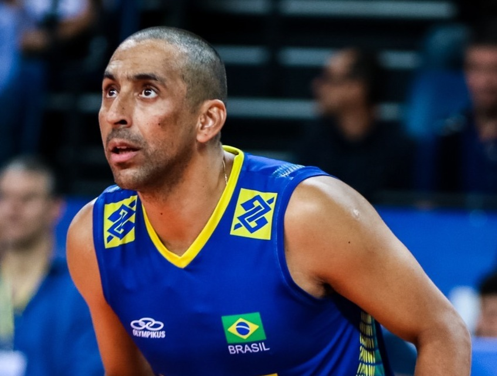
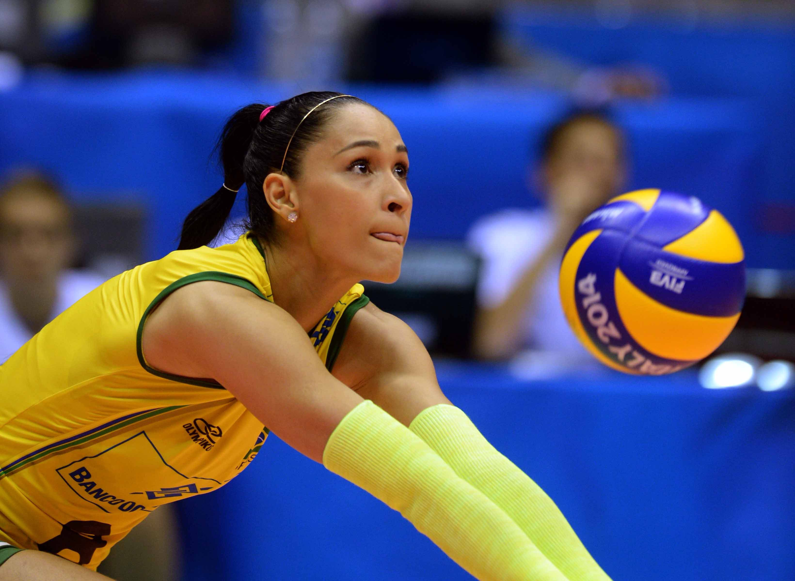

O tamanhho da quadra de vôlei é 10m de comprimento e 20m de largura.

MITO A quadra de vôlei mede 9m de largura e 18m de comprimento.
O tamanhho da quadra de vôlei é 10m de comprimento e 20m de largura.
MITO A quadra de vôlei mede 9m de largura e 18m de comprimento.

Não precisa fazer rodízio se meu time não começar com a bola, mas ganhar o primeiro ponto da equipe.

MITO. É preciso fazer rodízio toda vez que o time recebe a oportunidade de saque. Ou seja, o primeiro jogador que fica na posição de sacador, não é o primeiro a sacar.

O líbero não pode sacar e nem atacar

VERDADE. Pelas regras oficiais da FIVB (Federação Internacional de Voleibol), o líbero é uma posição puramente defensiva. Ele não pode sacar, bloquear (ou tentar bloquear) e nem completar um ataque se a bola estiver totalmente acima da rede.

A bola pode ser tocada com qualquer parte do corpo

Sim, inclusive com o pé! Desde a década de 1990, a regra permite defender a bola com as pernas ou pés. O importante é que a bola seja rebatida e não "carregada" ou segurada.

O vôlei de praia e o vôlei de quadra têm o mesmo peso de bola?

MITO. Embora parecidas, as bolas são diferentes. A bola de vôlei de praia é ligeiramente maior, tem uma pressão interna menor (é mais "murcha") e é feita de materiais mais resistentes à água e ao vento. A de quadra é menor, mais pesada e mais rápida.

Foi o Flamengo o primeiro clube fundado no brasil

O São Paulo Athletic Club foi criado por imigrantes ingleses e inicialmente focava no críquete. Mais tarde, com Charles Miller, passou a praticar o futebol e venceu o primeiro Campeonato Paulista oficial em 1902
Foi o Flamengo o primeiro clube fundado no brasil
O São Paulo Athletic Club foi criado por imigrantes ingleses e inicialmente focava no críquete. Mais tarde, com Charles Miller, passou a praticar o futebol e venceu o primeiro Campeonato Paulista oficial em 1902
Foi o Flamengo o primeiro clube fundado no brasil
O São Paulo Athletic Club foi criado por imigrantes ingleses e inicialmente focava no críquete. Mais tarde, com Charles Miller, passou a praticar o futebol e venceu o primeiro Campeonato Paulista oficial em 1902
Foi o Flamengo o primeiro clube fundado no brasil
O São Paulo Athletic Club foi criado por imigrantes ingleses e inicialmente focava no críquete. Mais tarde, com Charles Miller, passou a praticar o futebol e venceu o primeiro Campeonato Paulista oficial em 1902